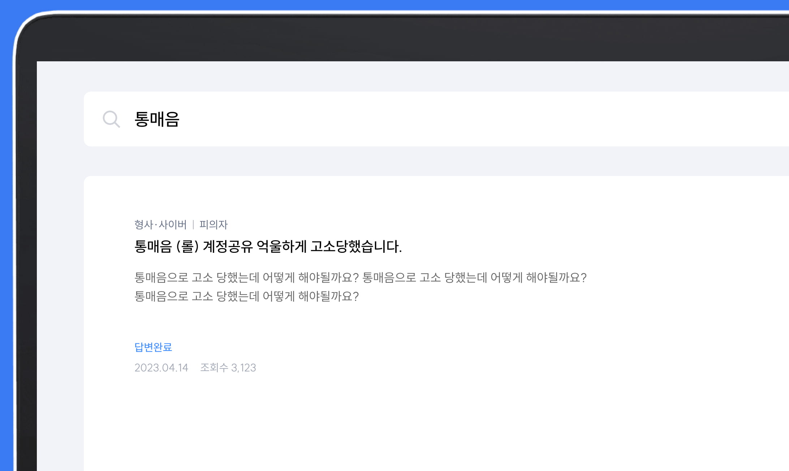

진짜 내 일처럼
진심을 다 하는
변호사는 없을까?
변호사 선택
이제 고민하지 마세요.
내 일처럼 열정을
다하지 않는 변호사는
절대, YK의 일원이
될 수 없습니다.
내가 찾던 변호사
IT’s YK
YK GPT
궁금한 키워드를
검색해보세요.
#법률지식인
#강제추행
#손해배상
#김경변호사
변호인단 매칭
좋은 변호사 찾기, 아직도 발품팔고 계신가요?
160인의 변호사 중 내 상황에 꼭 맞는 ‘최적화 변호인단’을
추천 받아보세요.

빠르고 정확한 법률 고민 해결
온라인 법률 상담, 애매한 답변에 지쳤다면?
법률 지식인은 100% 익명 커뮤니티로,
10분 안에 전문 변호사가 정확히 답변 드립니다.
YK 수사본부
소송 사건이 아니어도 OK경찰, 검찰 출신 변호사
검경 수사관 출신 전문 위원들이
억울한 상황에 처한 분들을 도와드립니다.
- 소송 없이 합의 및 조정이 필요한 경우
- 소송에서 이길 수 있는지 궁금한 경우
- 증거 수집이 필요한 경우
- 사기 피해가 걱정되는 경우
YK는 13,000명에게
희망이 되었습니다.
이번엔 당신이 이길 차례입니다.
나와 유사한 승소 사례 찾기
의뢰인의 성공은
YK의 성공입니다.
2012년 1인 법률 사무소에서 2023년 160인의
대형 로펌이 되기까지
YK는 의뢰인을 대신해
유능한 인재들을 영입하고
의뢰인의 성공을
최우선의 가치라 여겨왔을 뿐입니다.
- 전국지사
- 20개
- 변호사
- 160인
- 누적성공사례
- 11,047건